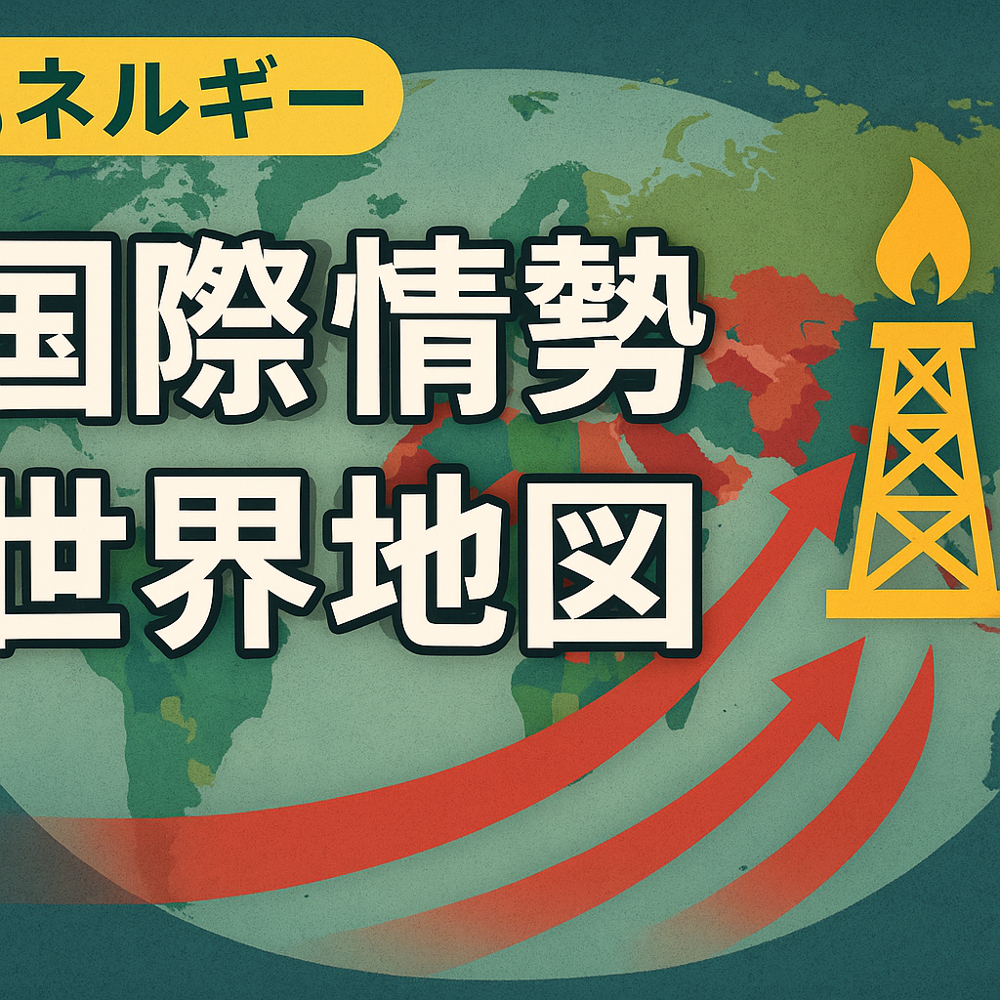

2026-03-17

【記事】
① 今起きていること
キューバの電力網が大規模に崩壊し、数百万人が停電に見舞われています。この電力危機は、既に慢性的な燃料不足の状況にさらに拍車をかける形で発生しています。アメリカによる石油輸送の制限措置が背景にあり、燃料の供給が著しく減少し、発電設備の稼働が困難になっています。
② 日本への影響
キューバの電力網崩壊は直接的な経済的影響は限定的と考えられますが、世界のエネルギー市場における不確実性や原油供給の不安定化は、日本のエネルギー安全保障に間接的な影響を与え得ます。輸入エネルギーに依存する日本にとって、燃料価格の高騰や供給不安定化は経済活動にリスクとして作用します。
③ 今後どうなるか
キューバの電力危機は短期的に収束する見込みが薄く、慢性的な燃料不足の問題が続く可能性が高いです。米国の制裁措置が今後も維持される場合、国際的な協議や制裁緩和がなければ、キューバの社会経済状況はさらに悪化する恐れがあります。
④ 日本の対策
日本政府は、エネルギー供給の多様化を進めるとともに、再生可能エネルギー導入の加速を図るべきです。また、国際的なエネルギー安全保障体制の強化にも積極的に関与し、不安定な世界情勢に備えたリスクマネジメントを強化する必要があります。
⑤ なぜ起きたのか
キューバは長年にわたり経済制裁を受けており、特に米国の石油輸送の制限が燃料不足の主要因となっています。輸入燃料に頼る構造の中で、物流や資金調達の困難さが発電用燃料の供給を阻害し、ついには電力網の崩壊を招きました。
⑥ 未来シナリオ
もしも米国とキューバ間の緊張緩和が実現し、制裁が一部緩和されれば、燃料供給は安定化し、電力問題の解決に向けた動きが進むでしょう。一方、制裁が継続・強化される場合は、社会不安や経済危機が深刻化し、地域の安全保障問題に発展する可能性があります。国際社会の対応が今後の展開を左右します。
【参考情報】
- 米国政府によるキューバへの経済制裁措置（石油輸送の禁止など）
- キューバの燃料輸入依存度と経済構造に関する国際エネルギー機関（IEA）報告
- 近年のカリブ海地域のエネルギー事情に関する国連及び地域研究機関の分析